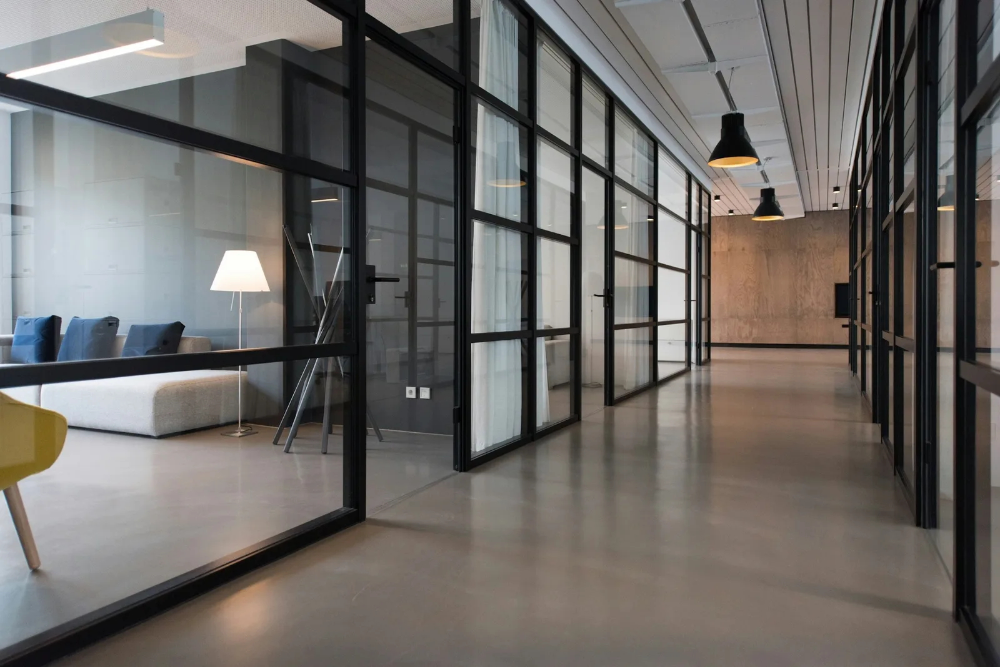
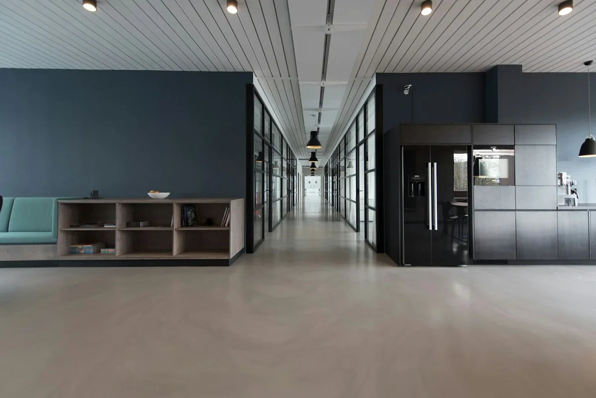
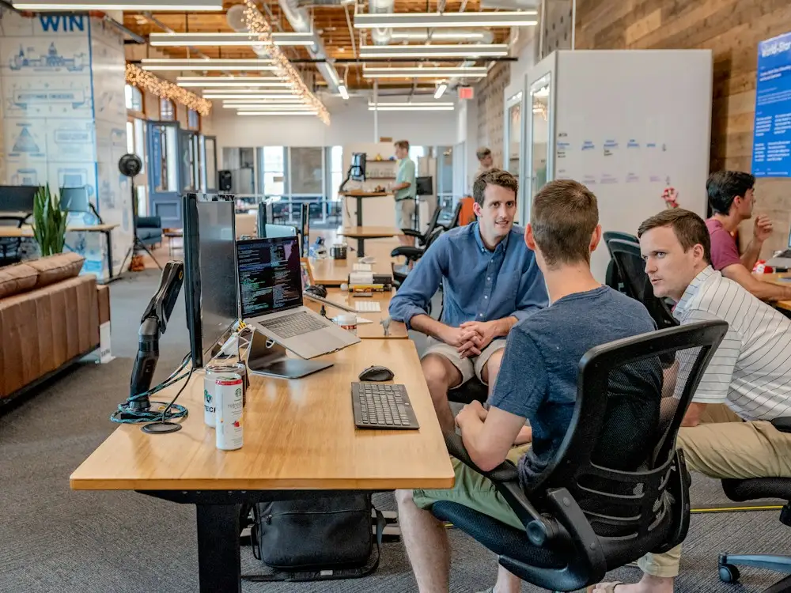

Self-serve with support
You configure the workspace with our documentation and a named contact for questions. Best for smaller teams with a clear operating model already in place.
- Workspace setup guidance
- Documented patterns
- Async support channel
Stackly services cover the work around the software — mapping your operating model, designing the workspace, connecting systems, and making sure people actually use it.
Scope changes by team, stage, and complexity. These are the shapes most engagements take.
You configure the workspace with our documentation and a named contact for questions. Best for smaller teams with a clear operating model already in place.
We work alongside your team to map the operating model, design the workspace, and connect the systems that matter — then hand over with it running.
A standing relationship for teams whose workflows keep evolving. Regular reviews, refinement of automation, and help when new systems arrive.
Most platform rollouts fail quietly — not because the software is wrong, but because nobody agreed on what it was supposed to represent. We spend the first part of every engagement on that question.
Who owns what, where decisions land, and which signals actually drive action.
Structure, permissions, naming, and views shaped around the mapped model.
Build it out, link the systems, and run it against real work before wider rollout.
Your team owns it from day one, with the reasoning documented alongside it.
A workspace that grows without a plan becomes an archive. We design the structure to stay legible as teams, projects, and priorities change.
Anyone joining a workspace should be able to understand its structure without a handover call.
Structure that cannot adapt becomes a constraint. We design for the first revision, not just the first launch.
Access, ownership, and visibility are decided deliberately, not left to defaults.
We connect the tools your team already relies on so the important context shows up in one place — without forcing a migration nobody asked for.
Keep delivery work visible alongside the decisions that shaped it.
Surface the updates that matter without adding another channel.
Pull operational context in without duplicating where it lives.
Keep permissions aligned with the way your organisation already manages them.
Tie reviews and checkpoints to the work they belong to.
Connect the internal tools that keep the business running day to day.
Most tools fail quietly. People keep a private workaround because the new system did not match their reality. We design the rollout to close that gap before it opens.
Sessions built around what each role actually does, not a generic product tour.
How the workspace works, why it is structured that way, and what to change when it evolves.
We work with people who will carry the practice forward after the engagement ends.
Short reviews at two weeks and six weeks, when the real friction shows up.

Support works best when the person answering already understands how your team operates. That is the difference between a ticket closed and a problem solved.
A consistent point of contact rather than a rotating queue.
Your structure, integrations, and history stay part of the conversation.
Periodic checks on how the workspace is holding up against how the team has changed.
Every engagement moves through the same broad shape. Timing flexes; the order does not.
We learn how work actually moves through your team before proposing anything.
The workspace structure, permissions, and flows are agreed on paper first.
Configuration and integrations are set up and tested against real work.
Teams are brought in with role-based walkthroughs and written notes.
Checkpoints after launch catch the friction that only appears in use.
Short perspectives on what actually happens when a platform meets a real team.
The launch goes fine. The friction arrives once the novelty wears off and real work returns.
Read perspective
When people keep a spreadsheet alongside the platform, that spreadsheet is telling you something.
Read perspective
Access models fail when nobody can explain them without opening the admin panel.
Read perspectiveTell us where the friction sits. We will tell you honestly whether services are the right answer — and what the engagement would look like.